AutoPrice
AutoPrice.Rmd
library(AutoPrice)
library(dplyr)
#>
#> Attaching package: 'dplyr'
#> The following objects are masked from 'package:stats':
#>
#> filter, lag
#> The following objects are masked from 'package:base':
#>
#> intersect, setdiff, setequal, union
library(ggplot2)
library(kableExtra)
#> Warning: package 'kableExtra' was built under R version 4.3.3
#>
#> Attaching package: 'kableExtra'
#> The following object is masked from 'package:dplyr':
#>
#> group_rowsThe AutoPrice package provides a cleaned dataset of vehicle prices, allowing users to explore how factors such as the year, make, and model influence vehicle pricing. This vignette demonstrates the package’s core functionality by analyzing vehicle price trends from 2023 to 2025.
Loading the Dataset
We’ll start by loading the cleaned dataset vehicles_clean, which contains information on vehicle prices, production years, makes, models, and other specifications.
data("vehicles_clean", package = "AutoPrice")
head(vehicles_clean)
#> # A tibble: 6 × 18
#> name description make model type year price engine cylinders fuel mileage
#> <chr> <chr> <chr> <chr> <chr> <dbl> <dbl> <chr> <dbl> <chr> <dbl>
#> 1 2024… "\n \… Jeep Wago… New 2024 74600 24V G… 6 Gaso… 10
#> 2 2024… "Al West i… Jeep Gran… New 2024 50170 OHV 6 Gaso… 1
#> 3 2024… NA GMC Yuko… New 2024 96410 6.2L … 8 Gaso… 0
#> 4 2023… "White Knu… Dodge Dura… New 2023 46835 16V M… 8 Gaso… 32
#> 5 2024… "\n \… RAM 3500 New 2024 81663 24V D… 6 Dies… 10
#> 6 2024… "\n \… Niss… Mura… New 2024 46000 24V M… 6 Gaso… 3838
#> # ℹ 7 more variables: transmission <chr>, trim <chr>, body <chr>, doors <dbl>,
#> # exterior_color <chr>, interior_color <chr>, drivetrain <chr>Analyzing Price Trends by Year
To investigate how vehicle prices have changed over time, we’ll plot the average price for each year from 2023 to 2025. This analysis can provide insights into whether newer models command higher prices on average.
avg_price_by_year <- vehicles_clean %>%
group_by(year) %>%
summarise(avg_price = mean(price, na.rm = TRUE))
ggplot(avg_price_by_year, aes(x = year, y = avg_price)) +
geom_line(color = "steelblue", size = 1.2) +
geom_point(size = 3) +
labs(title = "Average Vehicle Price by Year",
x = "Year",
y = "Average Price (USD)") +
theme_minimal()
#> Warning: Using `size` aesthetic for lines was deprecated in ggplot2 3.4.0.
#> ℹ Please use `linewidth` instead.
#> This warning is displayed once every 8 hours.
#> Call `lifecycle::last_lifecycle_warnings()` to see where this warning was
#> generated. # Exploring Price Distributions by Make
Vehicle prices can vary significantly by make. Let’s examine the distribution of prices for different vehicle manufacturers in 2025 to see which brands tend to be more expensive.
ggplot(filter(vehicles_clean, year == 2025), aes(x = make, y = price)) +
geom_boxplot(fill = "lightblue") +
labs(title = "Vehicle Price Distribution by Make (2025)",
x = "Make",
y = "Price (USD)") +
theme_minimal() +
theme(axis.text.x = element_text(angle = 45, hjust = 1))
Average Price by Transmission Type
Transmission type (automatic vs. manual) may also affect vehicle prices. Here, we calculate the average price by transmission type to understand if there’s a price premium associated with certain types.
avg_price_by_transmission <- vehicles_clean %>%
group_by(transmission) %>%
summarise(avg_price = mean(price, na.rm = TRUE))
kableExtra::kable(avg_price_by_transmission) %>%
kable_styling(font_size = 15)| transmission | avg_price |
|---|---|
| (CVT) CONT VAR. | 49404.00 |
| 1-Speed Automatic | 56532.28 |
| 1-Speed CVT with Overdrive | 42150.00 |
| 10-Speed Automatic | 62653.76 |
| 10-Speed Automatic with Overdrive | 50486.00 |
| 10-Speed Shiftable Automatic | 87075.00 |
| 6-SPEED AUTOMATIC | 34310.00 |
| 6-Spd Aisin F21-250 PHEV Auto Trans | 49075.57 |
| 6-Speed A/T | 61481.00 |
| 6-Speed Automatic | 44307.82 |
| 6-Speed Automatic Electronic with Overdrive | 28110.00 |
| 6-Speed DCT Automatic | 25975.00 |
| 62 kWh battery | 41693.00 |
| 7-Speed Automatic S tronic | 73767.50 |
| 7-Speed Automatic with Auto-Shift | 51430.00 |
| 7-Speed DSG Automatic with Tiptronic | 32320.75 |
| 7-Speed DSGA? Automatic w/ 4MO | 28677.91 |
| 8 Speed Dual Clutch | 53710.00 |
| 8-Speed A/T | 50356.50 |
| 8-Speed Automatic | 48885.81 |
| 8-Speed Automatic Sport | 49395.00 |
| 8-Speed Automatic with Auto-Shift | 41552.62 |
| 8-Speed Automatic with Tiptronic | 25915.80 |
| 8-Speed Shiftable Automatic | 30278.00 |
| 8-speed automatic | 38308.80 |
| 9 Spd Automatic | 32485.00 |
| 9-Speed 948TE Automatic | 39278.00 |
| 9-Speed A/T | 37430.00 |
| 9-Speed Automatic | 52435.17 |
| 9-speed automatic | 34000.00 |
| A/T | 31860.00 |
| Aisin 6-Speed Automatic | 83967.50 |
| Automatic | 53973.72 |
| Automatic CVT | 35262.49 |
| CVT | 28657.50 |
| CVT with Xtronic | 24979.00 |
| Variable | 46753.33 |
| automatic w/paddle shifters | 65416.00 |
| NA | 52530.00 |